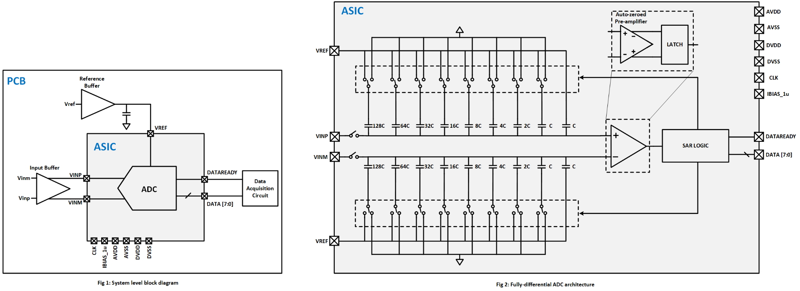

Mixed-signal IC design · 2024
100 KSPS 8-bit SAR ADC
A fully differential successive-approximation ADC designed for low-power wearable and implantable applications.
LOHAN ATAPATTU / PROJECT 04SAR2024 · MIXED-SIGNAL IC DESIGN
DESIGN OVERVIEW
A compact converter for low-power devices.
This mixed-signal project proposes a 100 KSPS, 8-bit fully differential successive-approximation-register ADC for wearable, implantable, and IoT applications. It was developed with the UNIC-CASS program by a five-student University of Moratuwa team, with me listed as team leader.
The proposed converter uses binary-weighted capacitor arrays and charge redistribution. Its comparator combines an auto-zeroed preamplifier with a regenerative latch; SAR logic controls bit trials and asserts DATAREADY when an 8-bit conversion is complete. The proposal planned schematic design and simulation in xschem/ngspice, physical design in Magic/KLayout, Netgen LVS checks, and SystemVerilog/OpenLane2 implementation of the digital logic.
UNIC-CASS PROPOSAL
Design targets.
These are the specifications proposed for the design, not measured post-fabrication results.
SYSTEM ARCHITECTURE
One conversion, eight decisions.
The proposal diagram shows the differential signal path and the internal capacitor arrays, comparator, and SAR logic.

System-level interface and fully differential SAR ADC architecture · UNIC-CASS proposal
PHYSICAL DESIGN
Layout view.
The project was designed for a compact mixed-signal footprint; the proposal set a maximum die area of 0.25 mm².